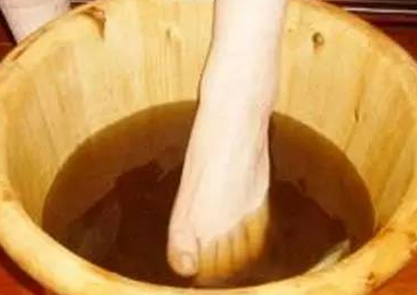

|  |
方法一：
睡觉前，在半盆水中加入bai100－150克醋，水要温热水，把脚放du入其中zhi泡大约半小时，长期坚持，定会有dao意想不到的收获。
一、消除疲劳。醋可以加速人体的血液循环，提高血红蛋白的携带氧的能力，改善身体各部位因为疲劳而导致的缺氧状态，增强各系统的新陈代谢，有利于身体中二氧化碳和废气的排出，从而使人体得到放松，恢复疲劳。
二、治疗睡眠障碍。每天用醋泡脚半小时，可以协调交感和副交感神经的兴奋程度，调节、疏理、松弛紧张的神经，调和经络气血，通达平衡阴阳，坚持日久，就可大大改变睡眠质量，治愈失眠、多梦、早醒等睡眠障碍。
|
|